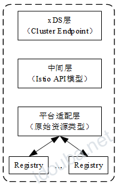
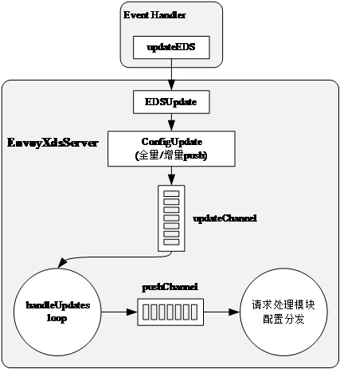

Pilot的设计亮点–《云原生服务网格Istio》书摘02
本节书摘来自华为云原生技术丛书《云原生服务网格Istio:原理,实践,架构与源码解析》一书架构篇的第14章司令官Pilot，第4节Pilot的设计亮点。更多内容参照原书，或者关注容器魔方公众号。作者：中虎
作为Istio数据面的司令官，Pilot控制中枢系统，它的性能好坏直接影响服务网格的大规模可扩展、配置时延等。如果Pilot的性能低，配置生成效率也低，那么它将难以管理大规模服务网格。比如，服务网格拥有成千上万服务及数十万服务实例，配置生成的效率很低，难以满足服务及Config更新带来的配置更新需要，将会造成Pilot负载很高，用户体验很差。Istio社区网络工作组很早就已经意识到这个问题，并在近期的版本中相继做了很多优化工作，本节选取具有代表性的4个优化点进行讲解。
14.4.1 三级缓存优化
缓存模型是软件系统中最常用的一种性能优化机制，通过缓存一定的资源，减少CPU利用率、网络I/O等，Pilot在设计之初就重复利用缓存来降低系统CPU及网络开销。目前在Pilot层面存在三级资源的缓存，如图14-28所示。

图14-28 Pilot层面的三级资源的缓存
以Kubernetes平台为例，所有服务及配置规则的监听都通过Kubernetes Informer实现。我们知道，Informer的LIST-WATCH原理是通过在客户端本地维护资源的缓存实现的。此为Pilot平台适配层的一级缓存。
平台层的资源（Service、Endpoint、VirtualService、DestinationRule等）都是原始的API模型，对于具体的Sidecar、Gateway配置规则的生成涉及平台层原始资源的选择，以及从原始资源到Istio资源模型的转换。如果在xDS配置生成过程中重复执行原始资源的选择与转换，则非常影响性能。因此Istio在中间层做了Istio资源模型的缓存优化。
最上面的一层缓存则是xDS配置的缓存。具体来讲，目前在xDS层面有两种配置缓存：Cluster与Endpoint，这两种资源较为通用，很少被Envoy代理的设置所影响。因此在xDS层面对Cluster及Endpoint进行缓存，能极大提高Pilot的性能。
随着Istio的发展与成熟，越来越多的缓存优化逐渐成型。当然，任何事物都有两面性，缓存技术同样带来了巨大的内存开销，我们同样需要综合权衡利弊。
14.4.2 去抖动分发
随着集群规模的增大，Config及服务、服务实例的数量成倍增长，任何更新都可能会导致Envoy配置规则的改变，如果每一次的更新都引起Pilot重新计算及分发xDS配置，那么可能导致Pilot过载及Envoy的不稳定。这些都难以支撑大规模服务网格的需求，因此Pilot在内部以牺牲xDS配置的实时性为代价换取了稳定性。
具体的去抖动优化是通过EnvoyXdsServer的handleUpdates模块完成的，其主要根据最小静默时间及最大延迟时间两个参数控制分发事件的发送来实现。图14-29展示了利用最小静默时间进行去抖动的原理：tN表示在一个推送周期内第N次接收到更新事件的时间，如果从t0到tN不断有更新事件发生，并且在tN时刻之后的最小静默时间段内没有更新事件发生，那么根据最小静默时间原理，EnvoyXdsServer将会在tN+minQuiet时刻发送分发事件到pushChannel。
图14-29 利用最小静默时间进行去抖动的原理
图14-30展示了最大延迟的去抖动原理：在很长的时间段内源源不断地产生更新事件，并且事件的出现频率很高，不能满足最小静默时间的要求，如果单纯依赖最小静默时间机制无法产生xDS分发事件，则会导致相当大的延迟，甚至可能影响Envoy的正常工作。根据最大延迟机制，如果当前时刻距离t0时刻超过最大延迟时间，则无论是否满足最小静默时间的要求，EnvoyXdsServer也会分发事件到pushChannel。
图14-30 最大延迟的去抖动原理
最小静默时间机制及最大延迟时间机制的结合，充分平衡了Pilot配置生成与分发过程中的时延及Pilot自身的性能损耗，提供了个性化控制微服务网格控制面性能及稳定性的方案。无论如何，Envoy代理的配置具有最终一致性，这也是微服务通信的基本要求。
14.4.3 增量EDS
我们知道，在集群或者网格中，数量最多、变化最快的必然是服务实例，在Kubernetes平台上，服务实例就是Endpoint（Kubernetes平台的服务实例资源）。尤其是，在应用滚动升级或者故障迁移的过程中会产生非常多的服务实例的更新事件。而单纯的服务实例的变化并不会影响Listener、Route、Cluster等xDS配置，如果仅仅由于服务实例的变化触发全量的xDS配置生成与分发，则会浪费很多计算资源与网络带宽资源，同时影响Envoy代理的稳定性。
Istio在1.1版本中引入增量EDS特性，专门针对以上场景对Pilot进行优化。首先，服务实例的Event Handler不同于前面提到的通用的事件处理回调函数（直接发送全量更新事件到updateChannel）。增量EDS异步分发的主要流程如图14-31所示。
可以看到，Kubernetes的Endpoint资源在更新时，首先在平台适配层由updateEDS将其转换为Istio特有的IstioEndpoint模型；然后，EnvoyXdsServer通过对比其缓存的IstioEndpoint资源，检查是否需要全量下发配置，并更新缓存；当仅仅存在Endpoints更新事件时，Pilot只需要进行增量EDS分发；随后，EnvoyXdsServer将增量EDS分发事件发送到updateChannel，后续处理步骤详见14.2.4节。

图14-31 增量EDS异步分发的主要流程
为了深入理解增量EDS的特性，这里讲解EnvoyXdsServer是如何判断是否可以进行增量EDS分发的。EnvoyXdsServer全局缓存所有服务的IstioEndpoint及在每个推送周期内发生变化的服务列表。前面已经讲过，EnvoyXdsServer是通过IstioEndpoint缓存判断是否需要全量配置下发的。在每个推送周期内，EnvoyXdsServer都维护了本周期内所有涉及Endpoint变化的服务列表，当增量EDS分发开始时，Pilot将在本次推送周期内更新的服务名称通过pushChannel发送到请求处理模块进行配置分发，这时只需生成与本推送周期变化的服务相关的EDS配置并下发即可。
14.4.4 资源隔离
随着用户对Istio服务网格的需求越来越旺盛，Istio社区充分认识到服务隔离或者说作用范围的必要性。通过有效定义访问范围及服务的有效作用范围，可以大大消除网格规模增加带来的配置规模几何级的增长，目前在理论上可支持无限大规模的服务网格。
Istio目前充分利用命名空间隔离的概念，在两方面做了可见范围的优化：用Sidecar API资源定义Envoy代理可以访问的服务；用服务及配置（VirtuslService、DestinationRule）资源定义其有效范围。
- Sidecar API资源是Istio 1.1新增的特性，目前支持为同一命名空间下的所有Envoy或者通过标签选择为特定的Envoy定义其对外可访问的服务（支持具体的服务名称或者命名空间的基本服务）。
- 服务及配置规则的可见范围。目前可定义同一命名空间可见或者全局范围可见。Istio通过其实现服务访问层面的隔离，同Sidecar API资源一起减少xDS配置数量。